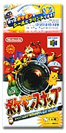
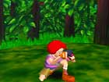
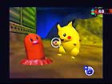
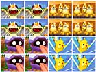

| ポケモン大撮影会！だれがいちばんうまく撮れるかな!? |
|  | 発売中 6,800円 ３Ｄスティックで被写体に照準を合わせて、ボタンを押してシャッターを切る！被写体はピカチュウやニャースなど、おなじみのポケモンたち。野性のポケモンだけが暮らす無人島に潜入し、ポケモンのありのままの姿を写真におさめようというのが、この『ポケモンスナップ』です。 |
| いちおうゲームということで、写っているポケモンの大きさや数などを基準に、写真には点数がつけられるんだけど、そればかり気にしていてもツマラナイ。要は、自分が気に入った写真が撮れればオッケーなんです。 | |
|  | |
| お気に入りの写真が撮れたら、カセットを全国のローソンやポケモンセンターに持っていけば、それをシールプリントにすることもできます。 | |
|  |
| 家族みんなで、友だち・恋人どうしで、だれがいちばんいい写真を撮れるか競うのも面白そうですネ！もちろん、ポケモン好きなお子さんが夢中になることも保証します。 | |
| ↓さらに詳しい情報はこちら 【http://www.nintendo.co.jp/n01/n64/software/nus_p_npfj/index.html】 |
 |
 |
|
 |